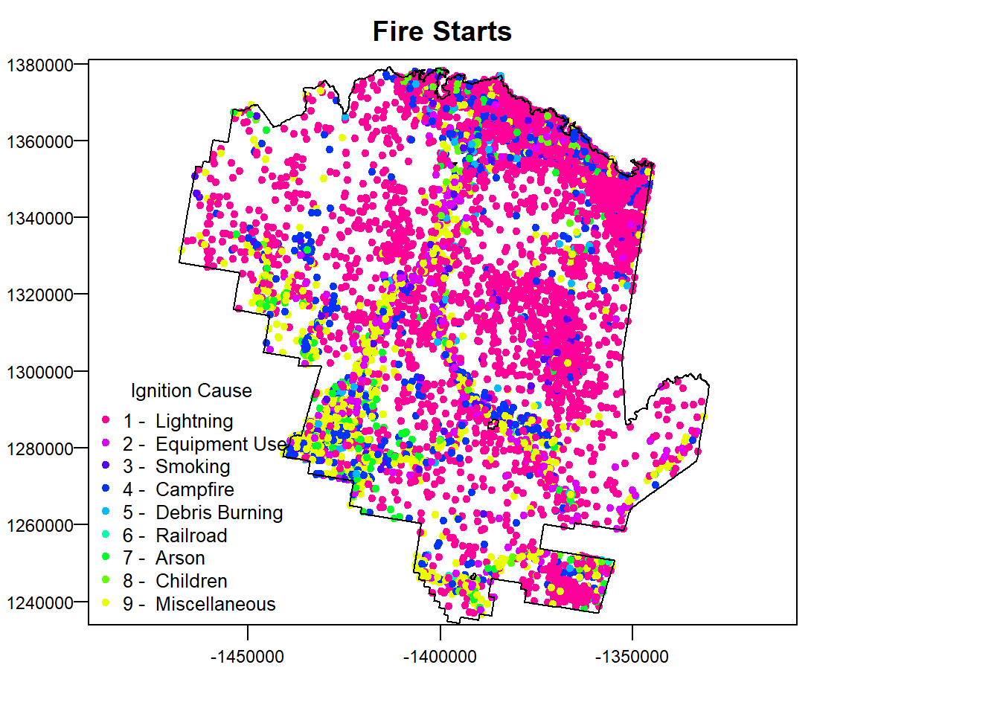
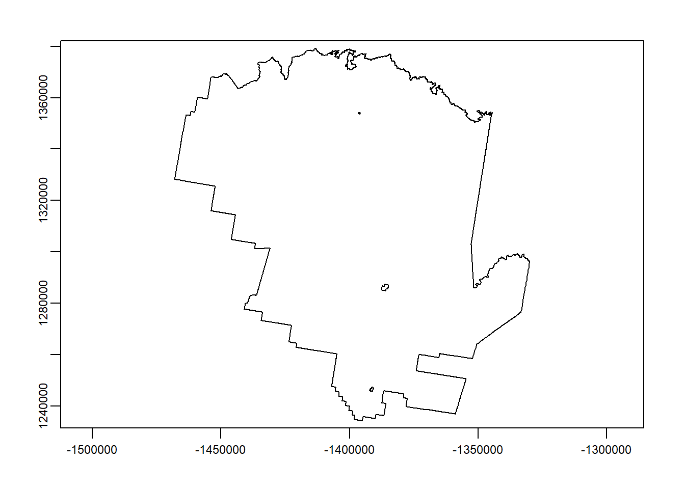
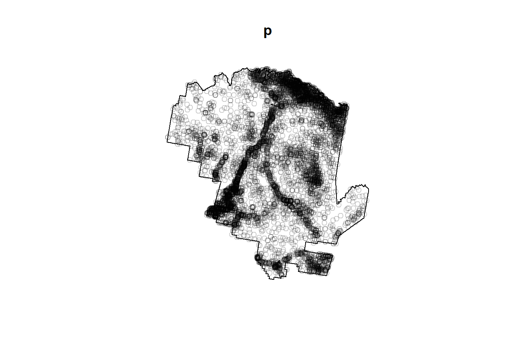
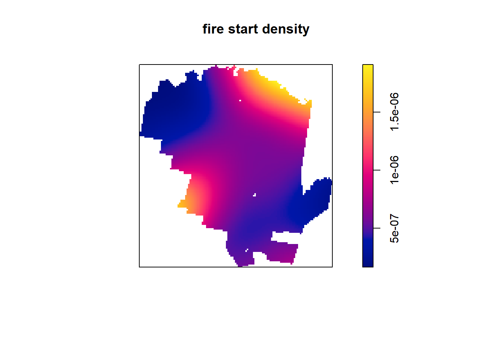
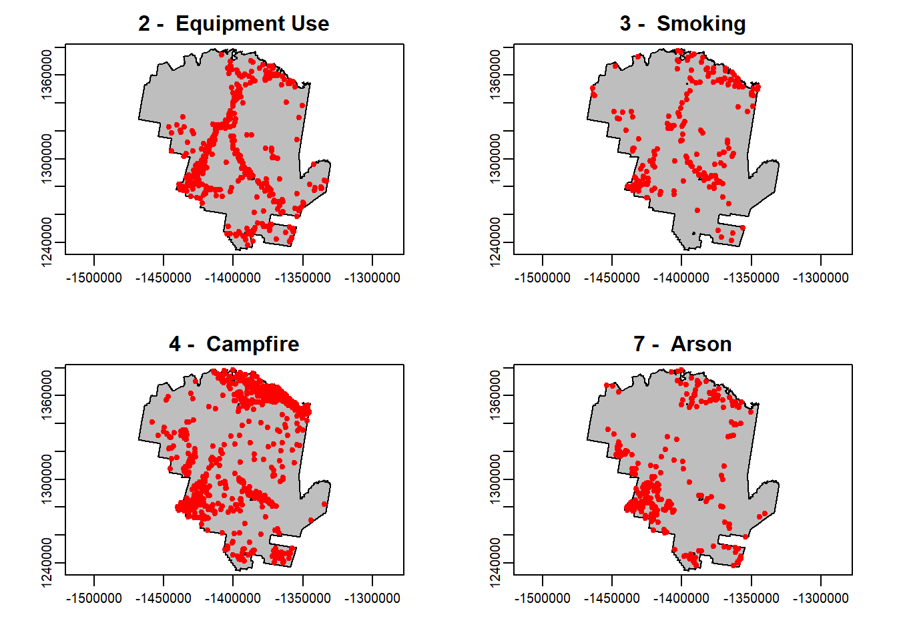
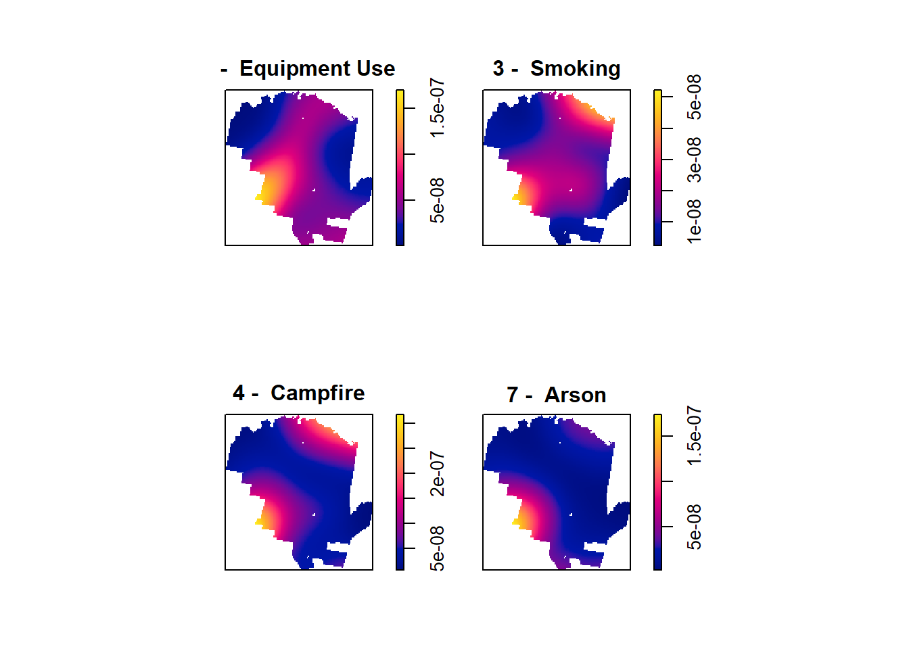
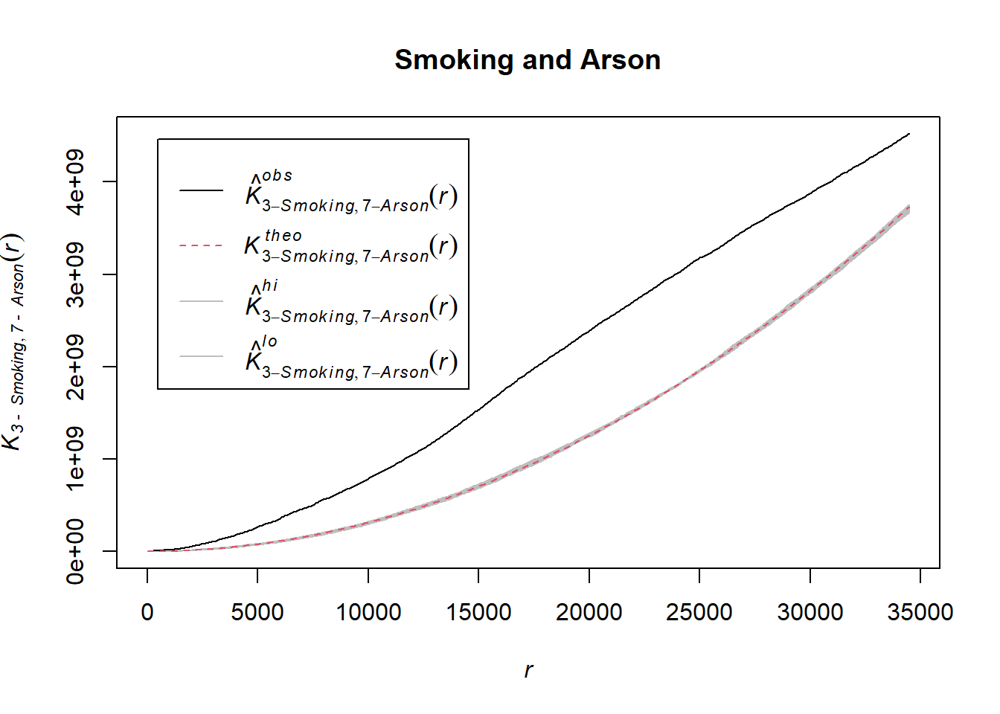

Point Pattern Analysis: Coding Guide
Josh Carrell - Utah State University, MS Ecology
Last Update: May 13, 2022
Point-Pattern Analysis (PPA) - Definition
Point-Pattern Analysis is the is the examination of the spatial arrangements of points in (usually 2-dimensional) space. While, PPA allows us to examine patterns, it is what the points represent that allows us to better understand the world around us.
PPA is a big topic in spatial statistics. So for time’s sake (We have much to cover yet!), we won’t be covering anything too crazy. We will be learning how to set up a point pattern analysis study with our data, visualize point density, and use a simple function to estimate relationships and randomness.
Kernal Density
Kernel density is a non-parametric way to estimate the probability density function of a random variable.
SpatStat
Spatstat is a family of packages for the statistical analysis of spatial point patterns. Load the Spatstat package.
Data
For this analysis, we are going to be analyzing point patterns for various causes of fires in Tonto National Forest located in central Arizona.
In your week 9 data folder, you should find two shapefiles:
fire_tonto.shp (Fire occurrence starting points)
Tonto_NF.shp (Tonto National Forest Boundary)

fire <- terra::vect("D:/R Textbook Template/NR6950 Notebook/NR 6950 Notebook/Data/Point_pattern/fire_tonto.shp")
tonto <- terra::vect("D:/R Textbook Template/NR6950 Notebook/NR 6950 Notebook/Data/Point_pattern/Tonto_NF.shp")
fire <- terra::project(fire, prj.aeaN83)
tonto <- terra::project(tonto, prj.aeaN83)head(fire,5)## FIRE_NAME LOCAL_FIRE LOCATION TOWNSHIP RANGE SECTION SUB_SECTIO
## 1 DEER 16 HWY 87 MP 238 0080N 0100E 05 NW
## 2 WEDNESDAY 0070N 0130E 23 NWNE
## 3 MAGGIE 0070N 0050E 6 NW
## 4 BIRCH 0100N 0100E 31 SENW
## 5
## PRINCIPAL_ REPORT_UNI REPORT_U_1 DISTRICT FIRE_NUMBE
## 1 GILA AND SALT RIVER 0312 Tonto National Forest 06 174
## 2 GILA AND SALT RIVER 0312 Tonto National Forest 05 219
## 3 GILA AND SALT RIVER 0312 Tonto National Forest 01 081
## 4 GILA AND SALT RIVER 0312 Tonto National Forest 04 099
## 5 NEW MEXICO 0306 Gila National Forest 03 040
## ADMIN_UNIT ADMIN_UN_1 PROTECTING PROTECTION
## 1 0312 Tonto National Forest USFS - USDA Forest Service
## 2 0312 Tonto National Forest USFS - USDA Forest Service
## 3 0312 Tonto National Forest USFS - USDA Forest Service
## 4 0312 Tonto National Forest USFS - USDA Forest Service
## 5 0306 Gila National Forest USFS - USDA Forest Service
## PROTECTI_1 OWNERSHIP_ OWNERSHIP1 OWNERSHI_1 TOPO_LANDF STATE_CODE
## 1 1 - National Forest 04
## 2 1 - National Forest 04
## 3 1 - National Forest 04
## 4 1 - National Forest 04
## 5 1 - National Forest 35
## STATE_NAME COUNTY COUNTY_NAM COUNTY_STA FIRE_MANAG POO_LATITU POO_LONGIT
## 1 AZ - ARIZONA 007 Gila 04 P3BEY6 34.07250 -111.3578
## 2 AZ - ARIZONA 007 Gila P38601 33.95222 -110.9842
## 3 AZ - ARIZONA 013 Maricopa P38601 33.96861 -111.8833
## 4 AZ - ARIZONA 007 Gila P38601 34.25139 -111.3678
## 5 NM - NEW MEXICO 35 34.01667 -111.8333
## LAT_DEG LAT_MIN LAT_SEC LONG_DEG LONG_MIN LONG_SEC DISCOVER_Y IGNITION
## 1 34 4 21 111 21 28 2005 2005/08/14
## 2 33 57 8 110 59 3 1999 1999/07/18
## 3 33 58 7 111 53 0 1999 1999/05/24
## 4 34 15 5 111 22 4 1999 1999/06/04
## 5 34 1 0 111 50 0 1991 1991/06/05
## DISCOVERY INITIAL_RE FIRE_DETEC DISCOVERED
## 1 2005/08/14 2005/08/14 45 - Cooperator or Coop employ DPS
## 2 1999/07/21 1999/07/21 1 - Agency Lookout
## 3 1999/05/24 1999/05/24 0 - Others
## 4 1999/06/04 1999/06/04 0 - Others
## 5 1991/06/06 1991/06/06 1 - Agency Lookout
## STATISTICA INITIAL_ST STRATEGY_M OBJECTIVES COMPLEX_FI
## 1 9 - Miscellaneous Suppression 2005/08/14
## 2 1 - Lightning Suppression 1999/07/21
## 3 9 - Miscellaneous Suppression 1999/05/24
## 4 4 - Campfire Suppression 1999/06/04
## 5 1 - Lightning 3 - Control (1983-1998) 1991/06/06
## COMPLEX_NA CONTAINED FIRE_OUT AGENCY_ACR OTHER_ACRE OTHER_AC_1 TOTAL_ACRE
## 1 2005/08/14 0.1 0 0 0.1
## 2 1999/07/30 2.0 0 0 2.0
## 3 1999/05/24 0.1 0 0 0.1
## 4 1999/06/04 0.1 0 0 0.1
## 5 1991/06/10 2.5 0 0 2.5
## FIRE_SIZE_ PRESCRIBED PRESCRIB_1 WUI_FIRE WUI_ACRES
## 1 A - .00-.25 Acres N 0 0
## 2 B - .26-9.99 Acres N 0 0
## 3 A - .00-.25 Acres N 0 0
## 4 A - .00-.25 Acres N 0 0
## 5 B - .26-9.99 Acres N 0 0
## FIRE_INTEN REP_WX_STA STATION_TY STATION_NA WIND_SPEED
## 1 1 - Flame Length 0-2' 20604 0 0
## 2 1 - Flame Length 0-2' 20603 4 PLEASANT VALLEY 0
## 3 4 - Flame Length >6-8' 20604 0 0
## 4 1 - Flame Length 0-2' 20603 4 PLEASANT VALLEY 0
## 5 2 - Flame Length >2-4' 292005 4 RESERVE 0
## NFDRS_FUEL OTHER_FUEL COVER_CLAS
## 1 L - Western Perennial Grasses 0 11 - Grass-Low resist ctrl
## 2 R - Hrdwd. Litter (Summer) 0 41 - Mixed conifer-Low resist ctrl
## 3 B - Mature Brush (Chaparral) 0 52 - Brush-Med resist ctrl
## 4 T - Sagebrush w/ Grass 0 11 - Grass-Low resist ctrl
## 5 K - Light Slash 0 -
## SLOPE ASPECT ELEVATION LOCAL_TIME RECORD_ENT SUBMITTED_ APPROVED_D
## 1 0 0 Flat 2500 America/Phoenix 2005/09/02 2005/09/02 2005/09/02
## 2 0 7 West 6000 America/Phoenix 2000/04/25
## 3 5 6 Southwest 3600 America/Phoenix 2000/04/19
## 4 2 0 Flat 5200 America/Phoenix 2000/04/19
## 5 5 9 Ridgetop 8500 America/Phoenix 1992/02/26
## CREATED_DA LAST_MODIF
## 1 2005/09/02 2015/12/09
## 2 2005/02/04 2015/12/09
## 3 2005/02/04 2015/12/09
## 4 2005/02/04 2015/12/09
## 5 2005/02/04 2015/12/09Initial Plotting
The fire points shapefile contains a column called “STATISTICA”, which contains the different classes of fire starts.
Let’s go ahead and give our data some initial plotting.
terra::plot(fire, "STATISTICA", plg=list(x="bottomleft", title = "Ignition Cause"),
pax=list(las=1), main = "Fire Starts")
terra::plot(tonto, add = T)
Point Pattern Analysis - Code
Observation Window - as.owin()
as.owin() is the function for creating an “observation window” for point pattern analysis. Basically it creates the bounding box for which inside our analysis will take place.
terra::plot(tonto)
In our case, we want to look at point pattern analysis within Tonto National Forest. We will turn that polygon into our “owin”.
library(spatstat)
tontoOwin <- as.owin(sf::st_as_sf(tonto))
class(tontoOwin)## [1] "owin"NOTE: We brought in our shapefiles as spatvectors through the terra library. We must have our shapefile be an sf object to become an “owin”. Use st_as_sf() to change our spatvector to sf.
ppp()
The function ppp() works on changing the coordinates of a dataset of points (our fire starts) into the class “ppp”. “ppp” represents a point pattern dataset in the two-dimensional plane.
To create a “ppp” you must create a dataset that has only coordinates. We can do this by using crds() from the terra package.
pts <- terra::crds(fire)
head(pts)## x y
## [1,] -1400789 1336513
## [2,] -1369109 1317797
## [3,] -1450217 1332942
## [4,] -1398473 1356396
## [5,] -1444803 1337477
## [6,] -1427220 1287664Now that we have our coordinates, we can develop our ppp by using the function and following syntax:
variable <- ppp(point_dataset[,1], point_dataset[,2], window = tontoOwin)
[,1] & [,2] refer to each column within our dataset (longitude and latitude) and the window refers to the observation window we created of the Tonto National Forest polygon.
p <- ppp(pts[,1], pts[,2], window=tontoOwin) # define x and y point and window## Warning: data contain duplicated pointsp # what does this look like?## Planar point pattern: 8307 points
## window: polygonal boundary
## enclosing rectangle: [-1467940.3, -1330040.8] x [1234332.1, 1379166.6] unitsplot(p) # plots the ppp (points) and the window (boundary) together.
density()
density(), from the stats package (don’t worry, it’s already loaded for you in R by default), computed the kernel density estimates from a point pattern dataset (our “ppp”). Simply put in our “ppp” which is assigned to p.
ds <- density(p)If we check the class of “ds” we will see it is “im”.
class(ds)## [1] "im"“im” represents a two-dimensional pixel image.
–
Plotting Point Density
And as simple as that, we can plot the kernel density estimates for our point pattern of fire starts!
plot(ds, main='fire start density')
Plotting Multiple
Below is some code for a for-loop that sets up a quick plot of 4 specific fire start causes. We will generate point density and test whether two of these have spatial relationships.
For this example, We will examine fires caused by:
Equipment Use
Smoking
Campfires
Arson
par(mfrow=c(2,2))
for (type in c("2 - Equipment Use", "3 - Smoking", "4 - Campfire", "7 - Arson")) {
plot(tonto, col='grey')
fire_t <- fire[fire$STATISTICA == type, ]
points(fire_t, col = "red")
title(type)
}
Multiple Point Patterns
We can do the same process as above for all of the objects in the dataset at once by using marks = withon our ppp() function.
The categories for fire starts are within the fire point dataset under the column STATISTICA. Since these categories are text and not factors, the ppp() function wont understand that they are really different categories of fire starts.
We can produce a ppp class that has each category readily available to plot as a density.
In our code below, lets make the fire categories a factor and then assign them to our marks =.
# add in marks by using as.factor() around the column of interest.
mpp <- ppp(pts[,1], pts[,2], window = tontoOwin, marks=as.factor(fire$STATISTICA))## Warning: data contain duplicated pointsPlot Multiple Point Patterns
Now lets plot the 4 point patterns of interest.
spp <- split(mpp) # divides data into groups based upon marks = above
plot(density(spp[c(2:4, 7)]), main='') # Plot Densities
K Cross Function
Now that we have generated point patterns for our fire starts, we can do a quick test to see if they is any clustering of two sets of patterns or to infer there is any relationship to their occurrences.
Using the envelope() function, we will examine clustering between smoking are arson point patterns. The syntax is as follows:
**variable <- envelope(ppp variable, Kcross, nsim = # of choice, i = “variable 1”, j = “variable 2”)
NOTE:
- nsim = Number of simulated point patterns to be generated when computing the envelopes
Let’s plot:
ekc <- envelope(mpp, Kcross, nsim = 5, i = "3 - Smoking", j = "7 - Arson")## Generating 5 simulations of CSR ...
## 1, 2, [etd 3:22] 3, [etd 2:56] 4,
## [etd 1:25] 5.
##
## Done.plot(ekc, main = "Smoking and Arson")
Interpretation
The dashed red line in our KCross plot represents the reference line for complete spatial randomness between the two point patterns.
The grey line around the red line is the randomization envelope.
The black line represent the Kcross function for these two point patterns.
So our black line is quite a bit higher than the red dashed line. This gives us evidence that there is clustering of the two point patterns in this example.